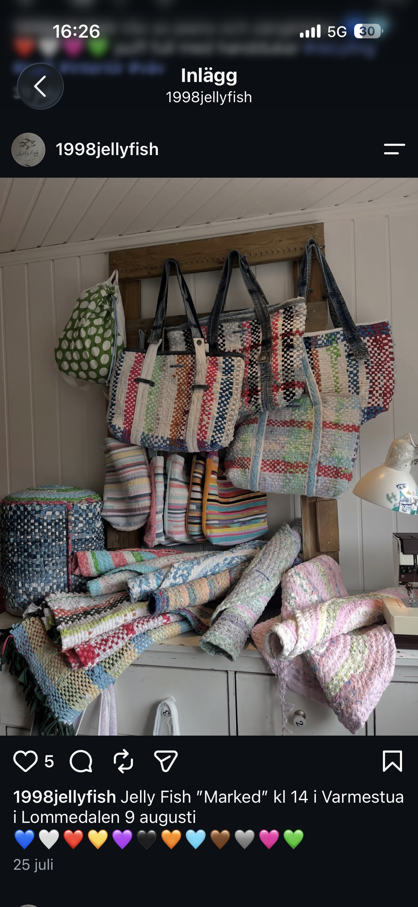

Väskor
Unika väskor av återbrukade textilier.
ÅTERBRUKAT · HANDGJORT · UNIKT
Jelly Fish skapar väskor, mattor och andra produkter av återbrukade textilier. Varje produkt får sitt eget uttryck.
Se produkter
JELLY FISH
Handgjorda produkter skapade av material som redan har fått ett liv.
Unika väskor av återbrukade textilier.
Färgstarka mattor med egen karaktär.
Handgjorda produkter av återbrukat material.
OM JELLY FISH
Jelly Fish handlar om att ta vara på material som redan finns och ge det ett nytt liv.
Gamla textilier förvandlas till färgstarka, användbara och unika produkter.
Eftersom materialet varierar blir varje produkt lite annorlunda.
FÖLJ JELLY FISH
Följ med och se nya produkter, färger och skapelser.
Besök Instagram